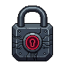
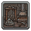
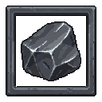
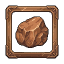
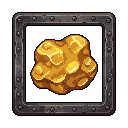
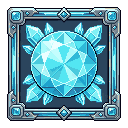
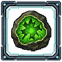
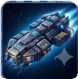

Click / Enter to continue

You play as the Girl Driller, a lone space miner drilling deeper and deeper into a series of asteroid mining zones. Your goal is simple: fly around, destroy mineable objects (asteroids), collect the minerals and Antique Power Up they drop, and use the money to unlock and upgrade an ever-growing arsenal of Power-Ups and Overdrive abilities.
As you spend Money in the Skill Tree to unlock more Power-Ups, new Mining Zones unlock further out from Earth, each one adding tougher, denser fields of mineable objects - see the Zones page for exactly how many Power-Ups each zone needs, and the Extra Survival Levels page for the survival challenge that stands between each pair of zones. Progression is driven entirely by the Skill Tree: money earned from mining and combat is spent there to unlock new Power-Ups, boost their damage/fire rate, and extend how long each Overdrive stays active.
Every Mining Zone is filled with destroyable objects (asteroids). They sit in place until a Power-Up's projectile or effect strikes them.
| Mineral | Hits to Destroy (Basic Power-Up) | Hits to Destroy (Fully Upgraded) |
|---|---|---|
| Iron | 3 | 2 |
| Bronze | 6 | 4 |
| Gold | 9 | 6 |
| Diamond | 10 | 8 |
| Uranium | 12 | 10 |
Destroying an object releases its mineral reward, which you collect simply by flying close enough to touch it - it's then added to your running Money total automatically. Each mineral type has its own Money value per unit and its own yield per destroy, and rarer minerals tend to take more hits to break loose - see the tables below.
Money is the currency spent on every Skill Tree unlock and upgrade, so mining efficiently (using the right Power-Ups for the zone you're in, and popping Overdrives on cooldown) directly speeds up your progression.
| Mineral | Units per Destroy |
|---|---|
| Iron | 1-2 |
| Bronze | 1-3 |
| Gold | 2-5 |
| Diamond | 4 |
| Uranium | 5 |
Separate from ordinary mineral drops, rare Antique Power Up collectibles occasionally spawn out in the zone as their own glowing pickups. Fly into one to collect it - it's instantly added to your Antique Power Up tally, shown as its own icon grid in the HUD with a running count for each type collected. There are 2 different Antique Power Up types to find and collect: Dragon Skull and Flower.
This isn't just a passive tally: the first time you've collected 100 of both types, a powerful Dragon Skull Fire Attack triggers automatically - twin dragon skulls appear and breathe fire across the zone on their own for a short time, with no button or Overdrive slot of its own. Once unlocked this way, it keeps firing again automatically every 15 minutes for the rest of the game, and every Dragon Skull/Flower you collect afterward keeps counting - it never stops or resets.
Power-Ups are unlocked one at a time from the Skill Tree by spending Money. Once unlocked, a Power-Up fires automatically for the rest of the run/session - you never have to aim or trigger it manually. Every combat Power-Up also has its own paired Overdrive (see the Overdrives section below) and its own upgrade nodes that boost its damage, fire rate, or other stats.
Your basic mining tool, available from the very start with no unlock cost. Automatically drills into nearby objects. Upgraded through the Drilling tree (Tungsten/Plasma/Diamond/Void Drill nodes) for more damage. Its Overdrive is Drill Storm.
Unlocks the "Girl Power" suit ability and is also the gateway node most other Power-Ups are unlocked behind. Suit upgrades add Armor (reduced damage taken), a Magnetic Suit (collect minerals from farther away without flying right up to them), and a late-game Cosmic Suit for maximum protection. Its Overdrive is Girl Power.
A melee-range hand weapon unlocked from the Suit tree. Its Overdrive, Axe Fury, spawns two Pixel Axes that swing and strike nearby objects for the duration of the Overdrive.
Fires homing rockets automatically at nearby objects at a steady reload rate (upgradeable for faster reloading). Its Overdrive is Missile Rain.
Fires a directional laser beam automatically at objects. Its Overdrive, Laser Beam, summons four Plasma Laser Cannons positioned diagonally around you (up-left, up-right, down-left, down-right), all firing simultaneously at every object in range for the Overdrive's duration.
Auto-fires fireball projectiles at objects. Its Overdrive is Inferno.
A companion drone that flies alongside you and fires its own shots automatically. Upgradeable for more projectile damage (Twin Cannons) and faster fire rate (Rapid Targeting). Its Overdrive is Drone Swarm.
A rotating flower bomb that seeks out nearby objects and detonates on contact for explosion damage. Upgradeable for more explosion damage and a longer target-seeking range. Its Overdrive is also named Flower Bomb.
Emits damaging energy shockwaves outward from your ship automatically. Upgradeable for more damage and a larger shockwave radius. Its Overdrive is Core Overload.
Automatically zaps nearby objects with electricity. Upgradeable for more damage and faster attack speed. Its Overdrive is Electric Storm.
Fires three independent fire projectiles at once - one left, one forward, one right - each traveling and hitting separately. Upgradeable for more damage and a faster throwing rate. Its Overdrive, Firestorm Split, repeatedly fires bursts of nine independent projectiles (three groups of three) for as long as the Overdrive is active.
Deploys a Drone that automatically fires Laser bolts at objects. Upgradeable for more damage and faster firing speed. Its Overdrive is Laser Drone.
Not a weapon - this unlocks a small autonomous companion that automatically flies to and gathers whatever minerals/Antique Power Up collectibles are currently visible on screen, then moves on to the next one. It never attacks and has no Overdrive; it just saves you legwork on pickups.
Every combat Power-Up has its own branch in the Skill Tree with numbered upgrade nodes (most go up to level 20 or 25). Spending Money on these nodes increases that Power-Up's damage, fire rate, throwing/attack speed, or a similar stat depending on the Power-Up. A fully upgraded Power-Up hits harder and fires faster than a freshly-unlocked one.
Every unlocked Power-Up has a matching Overdrive - a temporary, supercharged burst of that ability. Overdrives are entirely time-based: they do not cost minerals or Money to activate. Instead each one cycles through a Wait phase and an Active phase on its own timer.
The Active phase is always exactly 10 seconds, on every activation - it never grows. Only the Wait/recharge phase that follows grows, by 5 seconds every time you use that Overdrive:
Overdrive Core upgrade levels add flat bonus seconds on top of the 10-second Active phase shown above (not the Wait phase).
Mining Zones aren't just full of destroyable objects - a roaming Black Hole drifts through every zone as an environmental hazard.
There are 5 main Mining Zones, plus a 6th final zone unlocked much later. Zones unlock based on how many Power-Ups you've unlocked in total (not Depth or Money) - and every zone after the first also requires clearing that zone's preceding Extra Survival Level (see the next page). Each zone adds its own set of destroyable objects into the mix, and every object unlocked in an earlier zone stays available in every later zone too - so later zones have a larger, more varied mix of objects rather than replacing what came before.
| Zone | Name | Power-Ups Required | New Objects Added |
|---|---|---|---|
| Zone 1 | Asteroid Belt | 0 | 5 |
| Zone 2 | Crimson Rift | 4 | 10 (cumulative) |
| Zone 3 | Frozen Expanse | 7 | 15 (cumulative) |
| Zone 4 | Volcanic Core | 10 | 20 (cumulative) |
| Zone 5 | Void Nexus | 12 (all Power-Ups) | 25 (cumulative) |
| Zone 6 | The Infinite Core | All 12, fully upgraded, plus $100,000,000 lifetime earned | Reuses Void Nexus's object mix |
Zone 6, The Infinite Core, is the game's final destination: it only opens up once you've unlocked every Power-Up, maxed every node in the entire Skill Tree, and earned $100,000,000 in lifetime Money - a true "post-game" zone for a fully-built loadout.
You can travel between unlocked zones from the Mining Zones menu (accessible from the Pause menu). A zone whose Power-Up requirement is met but whose Extra Survival Level isn't finished yet shows a "Complete the Extra Level Survival Challenge" requirement instead of a Travel button.
Between each pair of Mining Zones sits a mandatory Extra Survival Level - a separate, self-contained combat challenge that launches automatically the moment you reach the Power-Up requirement for the next zone. There are 5 Extra Survival Levels in total, one built from each of Zones 1-5's own destroyable objects.
Once unlocked from the Skill Tree, the Collector is a small companion ship that flies alongside you. It automatically seeks out whichever minerals/Antique Power Up collectibles are currently visible on screen and gathers them one after another, moving on to the next target once it grabs one. It never attacks or damages anything, and its own travel speed is fixed - no upgrade makes it faster. Its only job is to save you the trouble of flying over to every drop yourself, letting you focus on fighting and moving on to the next target.
The game uses full auto-save - there is no manual Save button and nothing you need to remember to do.

Asteroid Belt
Iron: 0
Bronze: 0
Gold: 0
Diamond: 0
Uranium: 0
Antique Power Up